HTML (Hypertext Markup Language) and CSS (Cascading Style Sheets) are
two fundamental technologies that form the backbone of web
development. They are used to create and style the content you see on
the World Wide Web, making web pages visually appealing and
structurally organized. Let's explore each of them briefly: HTML
(Hypertext Markup Language): HTML is the standard markup language used
to create the structure and content of web pages. It consists of a
series of elements or tags that define different parts of a web page,
such as headings, paragraphs, links, images, and forms.
HTML uses a
hierarchical structure, with elements nested within one another to
create the layout and hierarchy of content. It provides the essential
building blocks for web pages, defining what content is displayed and
how it is organized.
Introduction
HTML Topics
- The main parts of our element are as follows:
The opening tag: This consists of the name of the element (in this case, p), wrapped in opening and closing angle brackets. This states where the element begins or starts to take effect — in this case where the paragraph begins.
- The closing tag: This is the same as the opening tag, except that it includes a forward slash before the element name. This states where the element ends — in this case where the paragraph ends. Failing to add a closing tag is one of the standard beginner errors and can lead to strange results.
- The content: This is the content of the element, which in this case, is just text.
- The element: The opening tag, the closing tag, and the content together comprise the element.
- Attributes that set a value always have:
- A space between it and the element name (or the previous attribute, if the element already has one or more attributes).
- The attribute name followed by an equal sign.
- The attribute value wrapped by opening and closing quotation marks.
Nesting elements
- You can put elements inside other elements too — this is called nesting. If we wanted to state that our cat is very grumpy, we could wrap the word "very" in a strong element, which means that the word is to be strongly emphasized:

Void Elements
- Some elements have no content and are called void elements. Take the img element that we already have in our HTML page:

- This contains two attributes, but there is no closing img tag and no inner content. This is because an image element doesn't wrap content to affect it. Its purpose is to embed an image in the HTML page in the place it appears.
Anatomy Of an Html Document
- That wraps up the basics of individual HTML elements, but they aren't handy on their own. Now we'll look at how individual elements are combined to form an entire HTML page. Let's revisit the code we put into our index.html example (which we first met in the Dealing with files article):
Here, we have the following:
- !DOCTYPE html — doctype. It is a required preamble. In the mists of time, when HTML was young (around 1991/92), doctypes were meant to act as links to a set of rules that the HTML page had to follow to be considered good HTML, which could mean automatic error checking and other useful things. However, these days, they don't do much and are basically just needed to make sure your document behaves correctly. That's all you need to know for now.
- HTML — the htmlelement. This element wraps all the content on the entire page and is sometimes known as the root element. It also includes the lang attribute, setting the primary language of the document.
- Head — the head element. This element acts as a container for all the stuff you want to include on the HTML page that isn't the content you are showing to your page's viewers. This includes things like keywords and a page description that you want to appear in search results, CSS to style our content, character set declarations, and more.
- Meta — This element sets the character set your document should use to UTF-8 which includes most characters from the vast majority of written languages. Essentially, it can now handle any textual content you might put on it. There is no reason not to set this, and it can help avoid some problems later on.
- meta— This viewport element ensures the page renders at the width of viewport, preventing mobile browsers from rendering pages wider than the viewport and then shrinking them down.
title — the title element. This sets the title of your page, which is the title that appears in the browser tab the page is loaded in. It is also used to describe the page when you bookmark/favorite it. - body — the body element. This contains all the content that you want to show to web users when they visit your page, whether that's text, images, videos, games, playable audio tracks, or whatever else.
Images

As we said before, it embeds an image into our page in the position it appears. It does this via the src (source) attribute, which contains the path to our image file.
We have also included an alt (alternative) attribute. In the alt attribute, you specify descriptive text for users who cannot see the image, possibly because of the following reasons:
- They are visually impaired. Users with significant visual impairments often use tools called screen readers to read out the alt text to them.
- Something has gone wrong causing the image not to display. For example, try deliberately changing the path inside your src attribute to make it incorrect. If you save and reload the page, you should see something like this in place of the image:
My Test Image
The words: my test image The keywords for alt text are "descriptive text". The alt text you write should provide the reader with enough information to have a good idea of what the image conveys. In this example, our current text of "My test image" is no good at all. A much better alternative for our Firefox logo would be "The Firefox logo: a flaming fox surrounding the Earth."Try coming up with some better alt text for your image now.
Note:Find out more about accessibility learning in our accessibility learning modules.
Marking up Text
This section will cover some essential HTML elements you'll use for marking up the text.
Headings
Heading elements allow you to specify that certain parts of your content are headings — or subheadings. In the same way that a book has the main title, chapter titles, and subtitles, an HTML document can too. HTML contains 6 heading levels, h1--h6, although you'll commonly only use 3 to 4 at most:
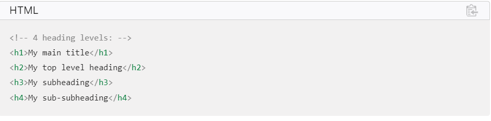
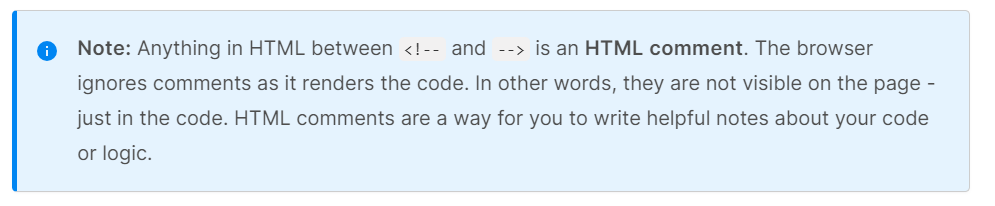
Paragraphs
As explained above, elements are for containing paragraphs of text; you'll use these frequently when marking up regular text content:
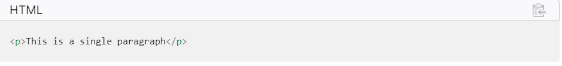
Add your sample text (you should have it from What will your website look like?) into one or a few paragraphs, placed directly below your element.
Lists
A lot of the web's content is lists and HTML has special elements for these. Marking up lists always consists of at least 2 elements. The most common list types are ordered and unordered lists:Unordered lists
Unordered lists are for lists where the order of the items doesn't matter, such as a shopping list. These are wrapped in a ul element.Ordered lists
Ordered lists are for lists where the order of the items does matter, such as a recipe. These are wrapped in an ol element.
Each item inside the lists is put inside an li (list item) element.
For example, if we wanted to turn the part of the following paragraph fragment into a list.
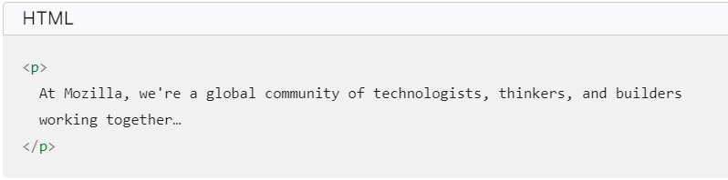
We could modify the markup to this
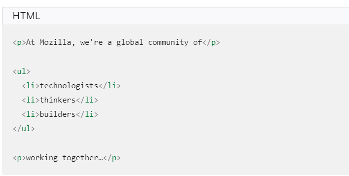
Try adding an ordered or unordered list to your example page.
Links
Links- Links are very important — they are what makes the web a web! To add a link, we need to use a simple element — — "a" being the short form for "anchor". To make text within your paragraph into a link, follow these steps:
Add a link to your page now, if you haven't already done so.
Conclusion
If you have followed all the instructions in this article, you should end up with a page that looks like the one below (you can also view it here):If you get stuck, you can always compare your work with our finished example code on GitHub.
Here, we have only really scratched the surface of HTML. To find out more, go to our Learning HTML topic.
Found a content problem with this page?
- Edit the page on GitHub.
- Report the content issue.
- View the source on GitHub. Want to get more involved? Learn how to contribute.
This page was last modified on Aug 29, 2023 by MDN contributors
CSS Topics
CSS (Cascading Style Sheets) is the code that styles web content. CSS basics walks through what you need to get started. We'll answer questions like: How do I make text red? How do I make content display at a certain location in the (webpage) layout? How do I decorate my webpage with background images and colors?
What is CSS?
Like HTML, CSS is not a programming language. It's not a markup language either. CSS is a style sheet language. CSS is what you use to selectively style HTML elements. For example, this CSS selects paragraph text, setting the color to red: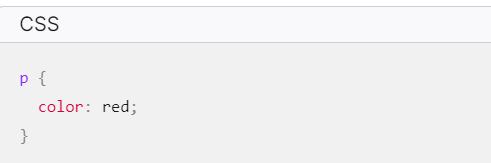
Let's try it out! Using a text editor, paste the three lines of CSS (above) into a new file. Save the file as style.css in a directory named styles.
To make the code work, we still need to apply this CSS (above) to your HTML document. Otherwise, the styling won't change the appearance of the HTML. (If you haven't been following our project, pause here to read Dealing with files and HTML basics.)
- Open your index.html file. Paste the following line in the head (between the and tags):

Anatomy Of a CSS Ruleset
Let's dissect the CSS code for red paragraph text to understand how it works:The whole structure is called a ruleset. (The term ruleset is often referred to as just rule.) Note the names of the individual parts:
Selector
This is the HTML element name at the start of the ruleset. It defines the element(s) to be styled (in this example, elements). To style a different element, change the selector.Declaration
This is a single rule like color: red;. It specifies which of the element's properties you want to style.Properties
These are ways in which you can style an HTML element. (In this example, color is a property of the elements.) In CSS, you choose which properties you want to affect in the rule.
Property value
To the right of the property—after the colon—there is the property value. This chooses one out of many possible appearances for a given property. (For example, there are many color values in addition to red.)- Note the other important parts of the syntax:
- Apart from the selector, each ruleset must be wrapped in curly braces. ({})
- Within each declaration, you must use a colon (:) to separate the property from its value or values.
- Within each ruleset, you must use a semicolon (;) to separate each declaration from the next one. To modify multiple property values in one ruleset, write them separated by semicolons, like this:
- First, find the output from Google Fonts that you previously saved from What will your website look like?. Add the element somewhere inside your index.html's head (anywhere between the and tags). It looks something like this: 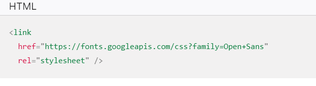
- Next, delete the existing rule you have in your style.css file. It was a good test, but let's not continue with lots of red text.
- Add the following lines (shown below), replacing the font-family assignment with your font-family selection from What will your website look like?. The property font-family refers to the font(s) you want to use for text. This rule defines a global base font and font size for the whole page. Since is the parent element of the whole page, all elements inside it inherit the same font-size and font-family.
- Now let's set font sizes for elements that will have text inside the HTML body (h1, li, and p). We'll also center the heading. Finally, let's expand the second ruleset (below) with settings for line height and letter spacing to make body content more readable.
- padding, the space around the content. In the example below, it is the space around the paragraph text.
- border, the solid line that is just outside the padding.
- margin, the space around the outside of the border. 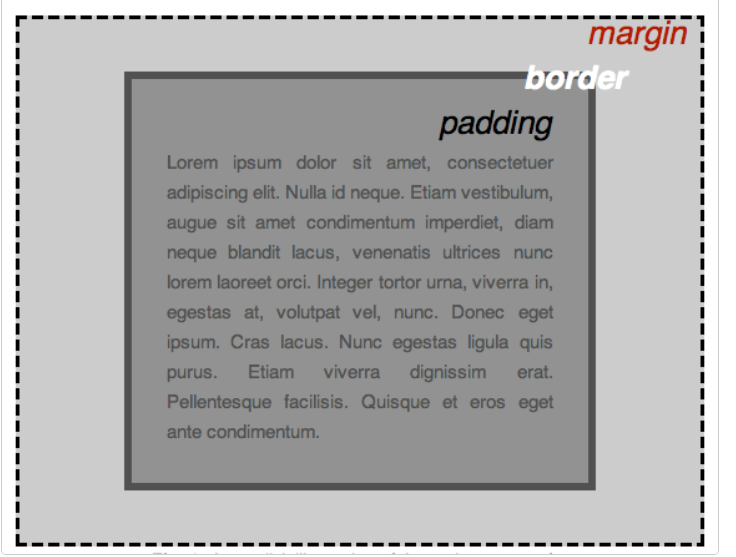
- width (of an element).
- background-color, the color behind an element's content and padding.
- color, the color of an element's content (usually text).
- text-shadow sets a drop shadow on the text inside an element.
- display sets the display mode of an element. (keep reading to learn more) To continue, let's add more CSS. Keep adding these new rules at the bottom of style.css. Experiment with changing values to see what happens.
- width: 600px; This forces the body to always be 600 pixels wide.
- margin: 0 auto; When you set two values on a property like margin or padding, the first value affects the element's top and bottom side (setting it to 0 in this case); the second value affects the left and right side. (Here, auto is a special value that divides the available horizontal space evenly between left and right). You can also use one, two, three, or four values, as documented in Margin Syntax.
- background-color: #FF9500; This sets the element's background color. This project uses a reddish orange for the body background color, as opposed to dark blue for the element. (Feel free to experiment.)
- padding: 0 20px 20px 20px; This sets four values for padding. The goal is to put some space around the content. In this example, there is no padding on the top of the body, and 20 pixels on the right, bottom and left. The values set top, right, bottom, left, in that order. As with margin, you can use one, two, three, or four values, as documented in Padding Syntax.
- border: 5px solid black; This sets values for the width, style and color of the border. In this case, it's a five-pixel–wide, solid black border, on all sides of the body.
- Finally, text-shadow applies a shadow to the text content of the element. Its four values are:
- The first pixel value sets the horizontal offset of the shadow from the text: how far it moves across.
- The second pixel value sets the vertical offset of the shadow from the text: how far it moves down.
- The third pixel value sets the blur radius of the shadow. A larger value produces a more fuzzy-looking shadow.
- The fourth value sets the base color of the shadow.
- Edit the page on GitHub.
- Report the content issue.
- View the source on GitHub. Want to get more involved? Learn how to contribute.

Selecting multiple elements
You can also select multiple elements and apply a single ruleset to all of them. Separate multiple selectors by commas. For example:

Different types of selectors
There are many different types of selectors. The examples above use element selectors, which select all elements of a given type. But we can make more specific selections as well. Here are some of the more common types of selectors:
There are many more selectors to discover. To learn more, see the MDN Selectors guide.Fonts and text
- Now that we've explored some CSS fundamentals, let's improve the appearance of the example by adding more rules and information to the style.css file.
This code links your page to a style sheet that loads the Open Sans font family with your webpage.


In this section we also use:
Changing the page color

This rule sets a background color for the entire page. Change the color code to the color you chose in What will my website look like?.
Styling the body

There are several declarations for the element. Let's go through these line-by-line:
Postioning and Styling the Main Page title
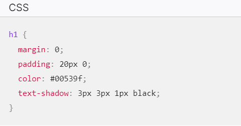
You may have noticed there's a horrible gap at the top of the body. That happens because browsers apply default styling to the h1 element (among others). That might seem like a bad idea, but the intent is to provide basic readability for unstyled pages. To eliminate the gap, we overwrite the browser's default styling with the setting margin: 0;.
Next, we set the heading's top and bottom padding to 20 pixels.
Following that, we set the heading text to be the same color as the HTML background color.
Centering the image
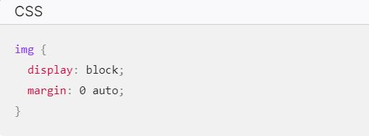Next, we center the image to make it look better. We could use the margin: 0 auto trick again as we did for the body. But there are differences that require an additional setting to make the CSS work.
The
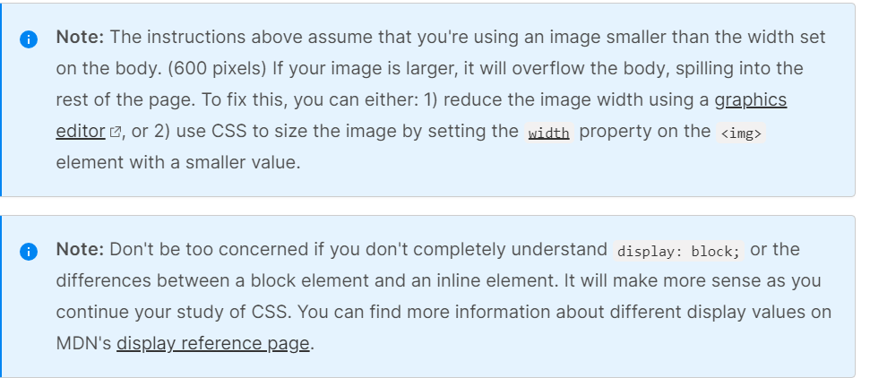
Conclusion
If you have followed all the instructions in this article, you should end up with a page that looks like the one below (you can also view it here):If you get stuck, you can always compare your work with our finished example code on GitHub.
Here, we have only really scratched the surface of HTML. To find out more, go to our Learning HTML topic.
Found a content problem with this page?
This page was last modified on Aug 29, 2023 by MDN contributors